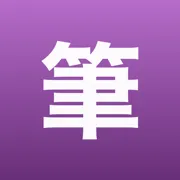
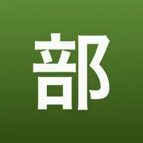

Japoński w osobnych aplikacjach
Aplikacje do nauki japońskiego, każda o jednej rzeczy: gramatyka, kanji, odmiana, partykuły, keigo, akcent. Jest też test poziomu, od którego można zacząć.
Którą aplikację wybrać
 Kaname: Gramatyka japońska要Powtórki JLPT: N5 N4 N3 N2 N1
Kaname: Gramatyka japońska要Powtórki JLPT: N5 N4 N3 N2 N1Mylisz podobne konstrukcje? Zobacz je obok siebie w prawdziwych zdaniach, nie w samym opisie. Do tego skan japońskiego ze zdjęcia i sprawdzenie własnego zdania przez AI.
 Bunmyaku: Japoński w zdaniu文脈Słówka, kanji i furigana
Bunmyaku: Japoński w zdaniu文脈Słówka, kanji i furiganaZnasz znak. Znasz słowo. Ale czy przeczytasz je, gdy wyskoczy w środku zdania? To osobna pamięć – i ta aplikacja ją ćwiczy.
 Katsuyokei: Odmiana japońska活用形Czasowniki, formy, fiszki
Katsuyokei: Odmiana japońska活用形Czasowniki, formy, fiszkiFormy biorą się z reguł, nie z pamięci. Ćwicz je, aż 書いて pojawi się, zanim zdążysz o nim pomyśleć.
 Joshi: Partykuły japońskie助詞Gramatyka i ćwiczenia JLPT
Joshi: Partykuły japońskie助詞Gramatyka i ćwiczenia JLPTWiedzieć, co znaczy に, to nie to samo co wiedzieć, kiedy jest で. Dziewięćset zdań, jedna luka, cztery partykuły – aż właściwa przychodzi sama.
 Kazoekata: Liczniki japońskie数え方Liczenie, kanji, ćwiczenia
Kazoekata: Liczniki japońskie数え方Liczenie, kanji, ćwiczeniaPrzestań zgadywać, jak czyta się japońskie liczniki. 三本 to さんぼん, 六本 to ろっぽん – i stoi za tym reguła.
 Kuzushi: Mowa potoczna崩しAnime, dorama i skróty
Kuzushi: Mowa potoczna崩しAnime, dorama i skrótyPodręcznik uczy 〜ている. Ludzie mówią 〜てる. Kuzushi ćwiczy tę lukę: rozpoznawanie skrótu i wytwarzanie go są liczone osobno, bo to dwie różne umiejętności.
 Shindan: Poziom japońskiego診断Test JLPT: N5 N4 N3 N2 N1
Shindan: Poziom japońskiego診断Test JLPT: N5 N4 N3 N2 N1Pozostałe aplikacje uczą po jednej rzeczy. Żadna nie powie ci, której naprawdę potrzebujesz. Jeden arkusz pod zegarem i odpowiedź przestaje być zgadywaniem.
 Keigo: Grzeczność japońska敬語Japoński formalny do pracy
Keigo: Grzeczność japońska敬語Japoński formalny do pracyZnać formę to nie to samo co wiedzieć, wobec kogo jej użyć. Za dużo keigo jest błędem dokładnie tak samo jak za mało – i to jest ta połowa, której nie uczy nikt.
 Kifuku: Akcent japoński起伏Wymowa, intonacja, słuchanie
Kifuku: Akcent japoński起伏Wymowa, intonacja, słuchanieJapoński ma warstwę, której kana nie zapisuje. 箸 i 橋 pisze się tak samo i nie są tym samym słowem – a różnica to reguła do nauczenia, nie lista do wykucia.
 Onomatope: Dźwięki i wyrażeniaオノマトペSłówka z mangi i anime
Onomatope: Dźwięki i wyrażeniaオノマトペSłówka z mangi i animeOnomatopeje nie są losowe. 濁点 robi rzecz większą, cięższą i mniej przyjemną – kto to rozumie, zgadnie słowo, którego nigdy nie widział. Reszta uczy się trzystu słówek.
Nauka japońskiego
- Partykuły japońskie: は, が, を, に, で, へ – Partykuły, które niosą zwykłe japońskie zdanie, i role, w jakich stoją – z przykładami i tłumaczeniem.
- Mylące pary w japońskim: は czy が, もう czy まだ – Pary, które wyglądają wymiennie i nie są – przy każdym zdaniu sytuacja i powód, dla którego druga forma nie pasuje.
- Formy czasownika japońskiego: ます, て, た, ない – Formy z pierwszych dwóch etapów odmiany – co każda robi i kiedy się jej używa.
- Liczniki japońskie – jak liczyć ludzi, rzeczy i zwierzęta – Czym liczy się ludzi, cienkie przedmioty, książki i zwierzęta – z czytaniem, notą o wyjątkach i zdaniami przykładowymi.
- Japoński potoczny – skróty z anime i rozmowy – Skróty, które słychać na co dzień, każdy obok pełnej formy, z której powstał.
- Keigo – japońska grzeczność w praktyce – Sytuacje z pracy oraz formy czczące i skromne – co powiedzieć i dlaczego akurat to.
- Onomatopeje japońskie – dźwięki z mangi i anime – Słowa, które naśladują dźwięk i stan – co znaczą i co robi z nimi 濁点.
- Gramatyka japońska N5 – wszystkie punkty z poziomu – Siedem grup gramatyki N5, od szkieletu zdania po ton wypowiedzi – każdy punkt ze znaczeniem, budową i przykładami.
Co dojdzie do rodziny
Seria domyka się na szesnastu aplikacjach. Sześć poniżej ma już nazwę, znak i zakres, ale nie ma jeszcze kodu – i dlatego nie mają dat. Kiedy powstaną, staną wyżej, wśród tamtych.
- Kikitori: Japoński ze słuchu聞き取りW przygotowaniuRozumienie ze słuchu
- Danraku: Japoński w akapicie段落W przygotowaniuCzytanie dłuższego tekstu
- Sakubun: Układanie zdań作文W przygotowaniuBudowanie zdań od zera
- Hatsuwa: Japoński mówiony発話W przygotowaniuMówienie, nie tylko wymowa

Hitsujun: Kolejność kresek筆順W przygotowaniuHiragana i katakana od zera
Bushu: Klucze kanji部首W przygotowaniuZ czego zbudowany jest znak